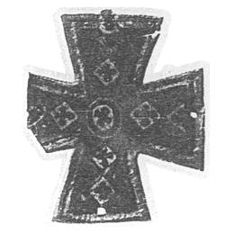
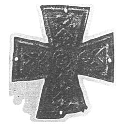

Catalog › CE-0110 · KHA1900-238b
Cruce-encolpion de aramă emailată, din două plăci nituite, cu ornament ștanțat
не позже XII в. · Kiev (Киев), gubernia Kiev, Ucraina · Muzeul Eclesiastic-Arheologic de pe lângă Academia Teologică din Kiev
double-sided reliquary cross (enkolpion), aramă; не позже XII в.; found at Kiev (Киев), gubernia Kiev, Ucraina; kept at Muzeul Eclesiastic-Arheologic de pe lângă Academia Teologică din Kiev.




Identificare
- Categorie
- Encolpion bivalv (relicvar)
- Material
- Aramă
- Tehnică
- Email; Ștanțare
Iconografie
- Avers
- Ornament geometric
- Descriere avers
- Cruce-encolpion de aramă emailată, cu capete drepte lărgite, din două plăci prinse la capete cu cuie; ambele jumătăți sunt decorate cu ornament ștanțat; adânciturile ștanțării sunt umplute cu email policrom; ornament din cruciulițe, cercuri și figuri liniare.
- Revers
- Ornament geometric
- Descriere revers
- Ambele jumătăți au ornament ștanțat; în sursă, una dintre imagini reprezintă fața, cealaltă fața dinspre interior a plăcii, pe care se vede ștanțarea.
Datare și atribuire
- Datare
- не позже XII в.
- Centru
- Necunoscut
Descoperire
- Localitate
- Kiev (Киев)
- Regiune
- gubernia Kiev
- Țară
- Ucraina
- Context
- Biserică / mănăstire
- Coordonate
- 50.4500° N, 30.5241° E
- Precizia locului
- Doar localitatea
Păstrare și referințe
- Colecție
- Muzeul Eclesiastic-Arheologic de pe lângă Academia Teologică din Kiev
- Bibliografie
- B. I. și V. N. Khanenko, Древности русскія. Кресты и образки, вып. II (Собраніе Б. И. и В. Н. Ханенко), Kiev, 1900 [Khanenko 1900], cat. nr. 238 б., Tabl. XX, reprodusă la Табл. XX, fig. 238 б. (două figuri: față și revers) (planșa de la p. 19 a PDF-ului).
- Figura
- Табл. XX, fig. 238 б. (două figuri: față și revers)
- Planșe
- Khanenko 1900, Табл. XX (planșă fără paginație tipărită; p. 19 în PDF)
- Observații
- Datare după Khanenko: не позже XII в. Găsit în zidul bisericii Treimii, deasupra Porții Sfinte a Lavrei Pecerska din Kiev; așezat, după părerea prof. Lașkarev citată în sursă, la zidirea bisericii. Piesa se află la Muzeul Eclesiastic-Arheologic de pe lângă Academia Teologică din Kiev. Sursa o leagă de Nikola Sviatoșa, prințul de Cernigov, portar al lavrei. Coordonate: ale localității (aproximative), nu date în sursă.
Citare: Corpus Encolpiorum, CE-0110, Cruce-encolpion de aramă emailată, din două plăci nituite, cu ornament ștanțat, --root/piese/KHA1900-238b/ (accesat 2026-10-20).